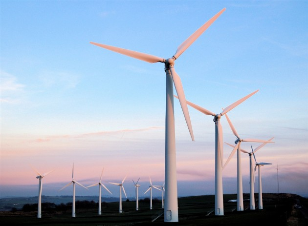

Ветроэнергетика
Ветроэнергетикаотрасль энергетики, специализирующаяся на преобразовании кинетической энергии воздушных масс в атмосфере в электрическую, механическую, тепловую или в любую другую форму энергии, удобную для использования в народном хозяйстве. Такое преобразование может осуществляться такими агрегатами, как ветрогенератор (для получения электрической энергии), ветряная мельница (для преобразования в механическую энергию), парус (для использования в транспорте) и другими. Энергию ветра относят к возобновляемым видам энергии, так как она является следствием активности Солнца. Ветроэнергетика является бурно развивающейся отраслью. К началу 2016 года общая установленная мощность всех ветрогенераторов составила 432 гигаватта[1] и, таким образом, превзошла суммарную установленную мощность атомной энергетики (однако на практике в реднем за год мощность ветрогенераторов в несколько раз ниже установленной мощности, в то время как АЭС почти всегда работает в режиме установленной мощности). В 2014 году количество электрической энергии, произведённой всеми ветрогенераторами мира, составило 706 тераватт-часов (3 % всей произведённой человечеством электрической энергии)[2]. Некоторые страны особенно интенсивно развивают ветроэнергетику, в частности, на 2015 год в Дании с помощью ветрогенераторов производится 42 % всего электричества; 2014 год в Португалии — 27 %; в Никарагуа — 21 %; в Испании — 20 %; Ирландии — 19 %; в Германии — 8 %; в ЕС — 7,5 %[3]. В 2014 году 85 стран мира использовали ветроэнергетику на коммерческой основе. По итогам 2015 года в ветроэнергетике занято более 1 000 000 человек во всем мире[4] (в том числе 500 000 в Китае и 138 000 в Германии)[5
15.12.2016
Наиболее перспективными местами для производства энергии из ветра считаются прибрежные зоны. Но стоимость инвестиций по сравнению с сушей выше в 1,5 — 2 раза. В море, на расстоянии 10—12 км от берега (а иногда и дальше), строятся офшорные ветряные электростанции.
Помимо свай для фиксации турбин могут использоваться и другие типы подводных фундаментов, а также плавающие основания. Первый прототип плавающей ветряной турбины построен компанией H Technologies BV в декабре 2007 года. Ветрогенератор мощностью 80 кВт установлен на плавающей платформе в 10,6 морских милях от берега Южной Италии на участке моря глубиной 108 метров.
Несмотря на снижение затрат на строительство ветрогенераторов в море в 2010-х годах, офшорная ветроэнергетика является одним из наиболее дорогих источников электричества. Стоимость производства электричества на офшорных ветроэлектростанциях колеблется от 200 до 125 долларов США / МВт.ч.